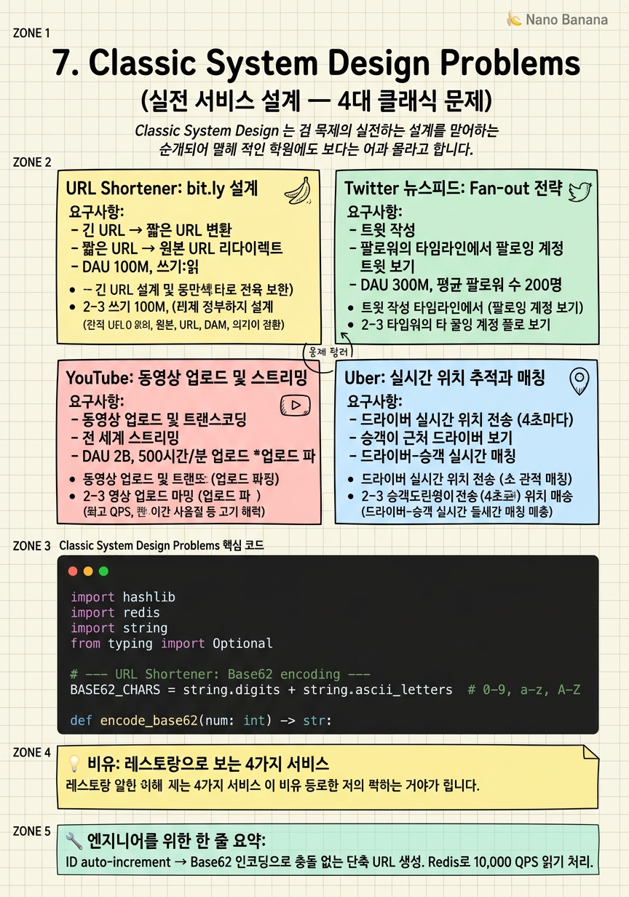

Classic System Design Problems

🎯 학습 목표
- URL Shortener의 핵심 설계 결정 (해시 함수, DB 선택, 캐시 전략)을 설명할 수 있다
- Twitter 뉴스피드의 Fan-out on Write vs Read 트레이드오프를 설명할 수 있다
- YouTube 동영상 스트리밍의 전체 파이프라인(업로드 → 트랜스코딩 → 배포 → 재생)을 설계할 수 있다
- Uber의 실시간 위치 추적과 드라이버-승객 매칭 알고리즘을 설명할 수 있다
- 각 문제에서 요구사항 추정과 병목 지점 심화 설계를 연결하여 설명할 수 있다
앞의 6개 챕터에서 배운 이론과 컴포넌트를 실전 문제에 적용한다. URL Shortener는 비교적 단순하지만 해시 충돌, 캐시, 리다이렉트 성능 최적화 같은 흥미로운 세부 문제가 있다. Twitter 뉴스피드는 Fan-out 전략이 핵심으로, read-heavy 시스템의 표준 설계 패턴을 담고 있다.
YouTube는 미디어 처리 파이프라인, 분산 스토리지, CDN, 적응형 스트리밍을 모두 다루는 복잡한 문제다. Uber는 실시간 위치 데이터, 지리공간 인덱싱, WebSocket 통신이 핵심이다.
각 문제를 RESHADED 프레임워크로 접근하면서, 이전 챕터의 개념들이 어떻게 조합되는지를 보는 것이 이 챕터의 목표다. 단순히 정답을 외우는 게 아니라, 각 설계 결정의 '왜'를 이해하는 것이 중요하다.
핵심 내용
URL Shortener: bit.ly 설계
요구사항: - 긴 URL → 짧은 URL 변환 - 짧은 URL → 원본 URL 리다이렉트 - DAU 100M, 쓰기:읽기 = 1:100
용량 추정:
- Write QPS: 100M * 0.1 / 86400 ≈ 100 QPS
- Read QPS: 100 * 100 = 10,000 QPS
- 5년 스토리지: 100 QPS * 86400 * 365 * 5 * 500B ≈ 7TB
핵심 설계 결정 1: 단축 URL 생성 방법
해시 방식 — MD5/SHA256의 앞 7자리 사용. md5(longUrl)[:7] → 7자리 Base62 = \(62^7 ≈ 3.5억\) 개 가능. 충돌(collision) 문제: 같은 7자리가 나오면? 충돌 감지 후 +1 suffix 추가 재시도.
Base62 카운터 방식 — DB auto-increment ID를 Base62로 인코딩. 1 → "1", 62 → "10", 63 → "11". 충돌 없음. 하지만 ID 예측 가능성 → URL enumeration 공격 위험. Snowflake ID처럼 분산 환경에서 unique ID 생성기 필요.
핵심 설계 결정 2: 리다이렉트 최적화
읽기가 쓰기의 100배. 단축 URL 조회는 Redis 캐시 필수. LRU 캐시로 인기 URL은 항상 메모리에.
301(영구 리다이렉트) vs 302(임시 리다이렉트): 301은 브라우저가 캐시하여 다음엔 서버 요청 없음 → 클릭 추적 불가. 302는 매번 서버를 거침 → 클릭 통계 가능. 통계가 필요하면 302.
전체 아키텍처: Client → LB → API Servers (stateless) → Redis (캐시) → MySQL (URL 매핑) + Snowflake (ID 생성)
Twitter 뉴스피드: Fan-out 전략
요구사항: - 트윗 작성 - 팔로워의 타임라인에서 팔로잉 계정 트윗 보기 - DAU 300M, 평균 팔로워 수 200명
핵심: Fan-out이란?
사용자 A(팔로워 200명)가 트윗을 쓰면, 200명의 타임라인에 이 트윗이 추가되어야 한다. 이를 "Fan-out"이라 한다.
Fan-out on Write (Push Model)
트윗 저장 시 팔로워 200명의 타임라인(Redis Sorted Set)에 미리 추가한다.
- 장점: 읽기 빠름 — 타임라인 조회 시 Redis에서 즉시 반환
- 단점: 팔로워 2M명(셀럽)이면 한 번의 쓰기가 2M번의 Redis 업데이트 → 쓰기 지연, 스토리지 비용
Fan-out on Read (Pull Model)
타임라인 조회 시 팔로잉 목록을 가져와 각자의 최신 트윗을 DB에서 조회, 병합, 정렬한다.
- 장점: 쓰기 빠름, 스토리지 효율적
- 단점: 읽기 느림 — 팔로잉 수 * DB 쿼리
실제 Twitter의 해법: Hybrid Approach
- 일반 사용자(팔로워 < 1000): Fan-out on Write
- 셀럽 계정(팔로워 > 1M): Fan-out on Read
- 일반 사용자 타임라인에 셀럽 트윗을 실시간으로 합치는 방식
타임라인 캐시:
Redis Sorted Set: key = timeline:{user_id}, score = tweet_timestamp, value = tweet_id. 최근 800개 트윗만 유지. 오래된 트윗은 DB에서 조회.
YouTube: 동영상 업로드 및 스트리밍
요구사항: - 동영상 업로드 및 트랜스코딩 - 전 세계 스트리밍 - DAU 2B, 500시간/분 업로드
업로드 파이프라인:
- 사전 서명 URL (Pre-signed URL): 클라이언트가 직접 S3에 업로드. API 서버를 거치지 않음 → 대용량 파일도 서버 부하 없음
- 업로드 완료 이벤트: S3 → Lambda 트리거 → Kafka에
VideoUploaded이벤트 발행 - 트랜스코딩 워커: Kafka 메시지 소비 → 720p, 1080p, 4K, 480p 여러 해상도로 인코딩
- CDN 배포: 인코딩 완료 파일 → CloudFront/Akamai CDN에 업로드
HLS (HTTP Live Streaming):
동영상을 10초짜리 작은 .ts 세그먼트로 분할. .m3u8 플레이리스트 파일이 세그먼트 목록 관리.
# playlist.m3u8
#EXTM3U
#EXT-X-TARGETDURATION:10
segment001.ts # 0-10초
segment002.ts # 10-20초
...
클라이언트는 현재 버퍼 상태와 네트워크 속도를 보고 해상도를 자동으로 전환 → Adaptive Bitrate Streaming (ABR).
스토리지 아키텍처:
- 원본 파일: S3 (비용 효율적, 거의 안 읽힘)
- 트랜스코딩 중간 파일: EFS 또는 S3 임시 버킷
- 최종 서빙 파일: CDN에 캐시
- 메타데이터 (조회수, 제목, 설명): MySQL
- 댓글: Cassandra (write-heavy, 시계열 패턴)
Uber: 실시간 위치 추적과 매칭
요구사항: - 드라이버 실시간 위치 전송 (4초마다) - 승객이 근처 드라이버 보기 - 드라이버-승객 실시간 매칭 - 예상 도착 시간 계산
실시간 위치 전송:
HTTP polling은 비효율적 — 4초마다 클라이언트가 요청. 더 좋은 방법은 WebSocket — 드라이버 앱과 서버 간 양방향 지속 연결. 위치 변경 시 서버로 push. 서버는 승객 앱으로 드라이버 위치 push.
Uber는 초당 수백만 위치 업데이트 처리. 이것을 Kafka로 버퍼링하고 여러 소비자(매칭, 가격 계산, ETA 계산)가 병렬 처리.
지리공간 인덱싱 (Geospatial Indexing):
근처 드라이버를 어떻게 빠르게 찾을까? 단순 좌표 쿼리는 느리다.
Geohash — 지구 표면을 재귀적으로 격자로 나누고 각 격자에 문자열 ID 부여. 같은 prefix = 같은 지역. dr5ru = 뉴욕 맨해튼. Redis로 Geohash prefix 기반 근접 드라이버 조회. Redis GEOSEARCH 명령어 직접 지원.
Quadtree — 지역을 4분면으로 재귀 분할. 빈 영역은 세분화 안 함 → 공간 효율적. 승객 주변 K개 드라이버를 \(O(\log n)\)에 찾기.
드라이버-승객 매칭:
- 승객 요청 → Geohash로 반경 2km 드라이버 조회
- 드라이버별 ETA 계산 (도로 그래프 + 실시간 교통 정보)
- 가장 빠른 ETA의 드라이버에게 요청 발송
- 드라이버 수락/거절 → 거절 시 다음 드라이버에게
동시에 여러 승객이 같은 드라이버에 매칭되지 않도록 분산 락(Distributed Lock) 필요. Redis SETNX로 드라이버 ID를 잠금.
💡 비유로 이해하기
URL Shortener는 축약 명함 서비스다. 복잡한 주소를 간단한 코드로 바꾼다. 코드를 보여주면 직원이 진짜 주소로 안내한다. 손님이 많으니 단골 주소는 카운터 앞에 붙여놓는다(캐시).
Twitter 뉴스피드는 조식 뷔페 배달 서비스다. 유명인(셀럽)이 요리를 만들면, 10만 명 팔로워에게 일일이 배달하면 너무 느리다(Fan-out on Write 한계). 대신 팔로워가 아침에 뷔페에 오면 유명인의 요리를 바로 가져가는 것이 Fan-out on Read다.
YouTube는 영화 배급사다. 촬영 완료 필름을 여러 상영 형식(4K, HD, SD)으로 편집하고(트랜스코딩), 전국 영화관(CDN)에 배포한다. 고객은 가장 가까운 영화관(PoP)에서 본다.
Uber는 콜택시 지역 배차 센터다. 기사들이 자신의 위치를 4초마다 센터에 보고한다. 고객이 호출하면 센터는 지역 지도에서 가장 가까운 기사를 즉시 찾아 연결한다.
💻 코드 예시
Base62 인코딩을 이용한 URL Shortener의 핵심 로직과, Redis Sorted Set을 이용한 Twitter 타임라인 Fan-out 구현이다.
import hashlib
import redis
import string
from typing import Optional
# --- URL Shortener: Base62 encoding ---
BASE62_CHARS = string.digits + string.ascii_letters # 0-9, a-z, A-Z
def encode_base62(num: int) -> str:
if num == 0:
return BASE62_CHARS[0]
result = []
while num:
result.append(BASE62_CHARS[num % 62])
num //= 62
return ''.join(reversed(result))
def decode_base62(s: str) -> int:
return sum(BASE62_CHARS.index(c) * (62 ** i)
for i, c in enumerate(reversed(s)))
# URL Shortener service
class UrlShortener:
def __init__(self, redis_client: redis.Redis):
self.r = redis_client
self._counter_key = "url:counter"
def shorten(self, long_url: str) -> str:
# Check if already shortened
existing_id = self.r.hget("url:long_to_id", long_url)
if existing_id:
return encode_base62(int(existing_id))
url_id = self.r.incr(self._counter_key) # Atomic increment
short_code = encode_base62(url_id)
# Bidirectional mapping
self.r.hset("url:id_to_long", url_id, long_url)
self.r.hset("url:long_to_id", long_url, url_id)
return short_code
def resolve(self, short_code: str) -> Optional[str]:
url_id = decode_base62(short_code)
return self.r.hget("url:id_to_long", url_id)
# --- Twitter Timeline Fan-out on Write ---
class TimelineService:
TIMELINE_MAX = 800 # Keep last 800 tweets per user
def __init__(self, redis_client: redis.Redis):
self.r = redis_client
def post_tweet(self, user_id: str, tweet_id: str, timestamp: float,
follower_ids: list[str]):
# Fan-out: push tweet to all followers' timelines
pipe = self.r.pipeline()
for follower_id in follower_ids:
key = f"timeline:{follower_id}"
pipe.zadd(key, {tweet_id: timestamp}) # score = timestamp
pipe.zremrangebyrank(key, 0, -(self.TIMELINE_MAX + 1)) # Keep max
pipe.execute()
def get_timeline(self, user_id: str, count: int = 20) -> list[str]:
key = f"timeline:{user_id}"
# ZRANGE with REV returns newest first
return self.r.zrange(key, 0, count - 1, rev=True)
# Demo
r = redis.Redis()
shortener = UrlShortener(r)
code = shortener.shorten("https://example.com/very/long/url")
print(f"Short code: {code}")
print(f"Resolved: {shortener.resolve(code)}")self.r.incr()는 Redis의 원자적 연산이라 분산 환경에서도 중복 없이 카운터를 증가시킨다. Fan-out에서 pipeline()을 써서 팔로워 수만큼의 Redis 명령을 한 번의 네트워크 요청으로 일괄 처리한다. ZREMRANGEBYRANK로 오래된 트윗을 자동 정리하여 메모리를 절약한다.
🏭 현업에서의 평가
✅ 시니어가 보는 것
- 암기가 아닌 요구사항 분석에서 설계가 나오는가
- 각 설계 결정의 트레이드오프를 명확히 설명하는가
- 변형 조건(DAU가 10배 증가하면? 미디어 지원 추가하면?)에 유연하게 대응하는가
- 병목 지점을 식별하고 구체적 최적화 방법을 제안하는가
⚠️ 레드 플래그
- 문제를 보자마자 이전에 외운 아키텍처를 그대로 그리기 시작
- 왜 그 DB를, 왜 그 캐시 전략을 썼는지 설명 못 함
- Fan-out on Write만 알고 셀럽 계정의 문제를 인지 못 함
- 동영상 트랜스코딩 과정이나 HLS를 모르면서 YouTube를 설계하는 경우
🎤 예상 인터뷰 질문
- Instagram DM(Direct Message) 시스템을 설계해봐. Twitter Feed와 무엇이 다른가?
- YouTube의 동영상 추천 시스템을 뉴스피드 설계에 어떻게 통합할 것인가?
- Uber에서 surge pricing(할증 요금)을 실시간으로 계산하는 시스템을 설계해봐.
✨ 핵심 요약
URL Shortener = Base62 + Redis
ID auto-increment → Base62 인코딩으로 충돌 없는 단축 URL 생성. Redis로 10,000 QPS 읽기 처리.
Fan-out on Write vs Read
일반 사용자는 Write, 셀럽(팔로워 수백만)은 Read. Twitter는 Hybrid로 두 방식을 조합한다.
YouTube = 비동기 파이프라인
업로드 → Kafka → 트랜스코딩 워커 → CDN. 각 단계를 비동기로 분리해 업로드 API는 즉시 응답한다.
Uber = WebSocket + Geohash
실시간 위치는 WebSocket, 근접 검색은 Geohash/Quadtree, 매칭은 Distributed Lock.
읽기:쓰기 비율이 설계를 결정
비율을 먼저 계산하라. 100:1 read-heavy면 캐시 최우선, 1:100 write-heavy면 LSM-Tree DB + 비동기 큐.
단일 설계는 없다
같은 서비스도 요구사항에 따라 설계가 달라진다. DAU가 10배 다르면 아키텍처도 다르다.
HLS가 스트리밍 표준
10초 세그먼트 분할 + m3u8 플레이리스트 + Adaptive Bitrate Streaming이 현대 동영상 스트리밍의 기본.
Pre-signed URL로 대용량 업로드
클라이언트가 S3에 직접 업로드하면 API 서버를 거치지 않아 대역폭과 서버 부하 문제가 사라진다.